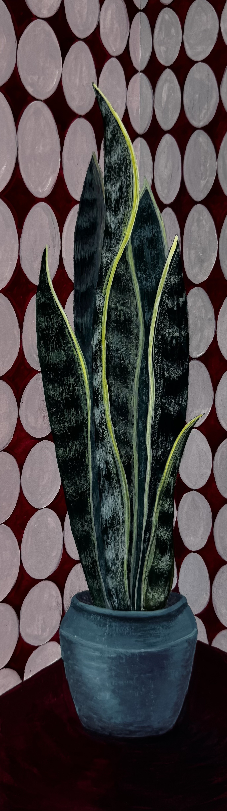
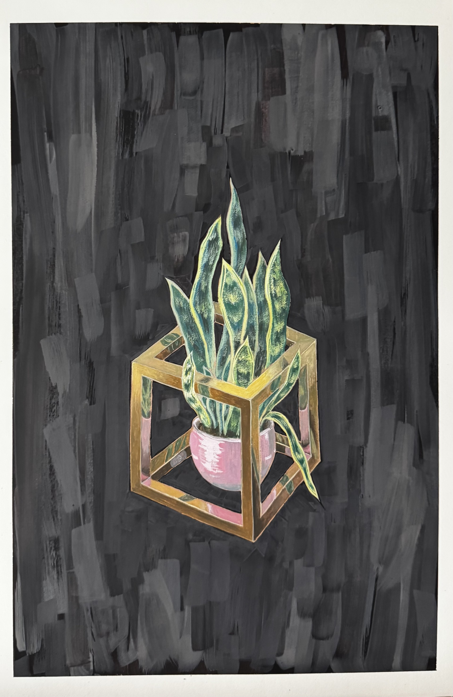
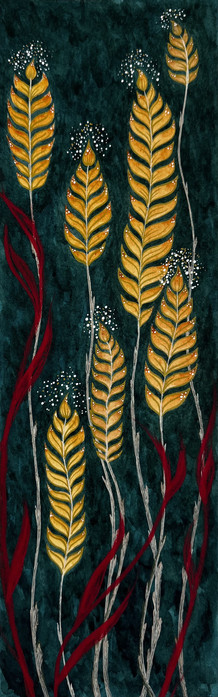
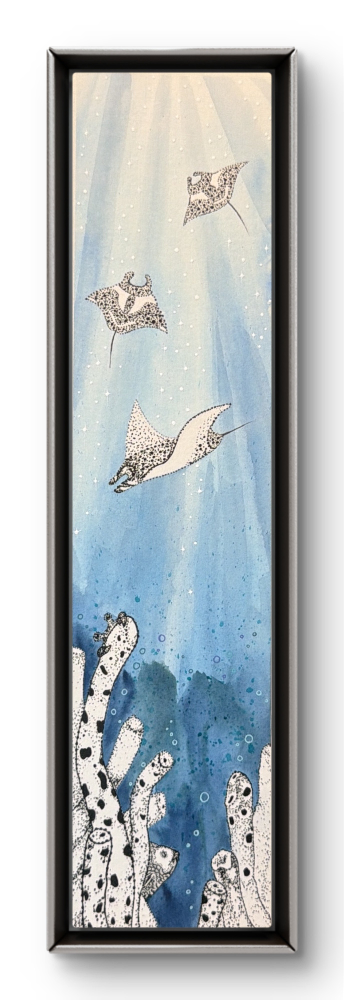

Series
Fragile Futures
Fragile Futures reflects on movement, resilience, and coexistence through wildlife, flora, organic and inorganic forms. Nature is treated not as a distant landscape, but as an intimate invitation to be in the present.
Mediums vary (oil, acrylic, watercolor, gouache) as materials are guided by the concept.




